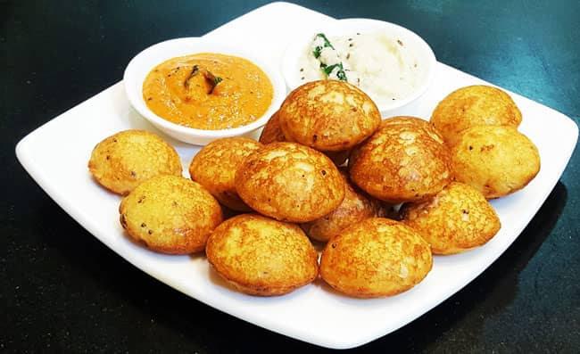

Rava Appe (Suji Appe, Rava Paniyaram, Rava Paddu) is an Instant South Indian breakfast dish that is delicious and very easy to make.

Ingredients
2 TbspVegetable Oil (plus for frying)
1/2 TspBrown Mustard Seeds
1/2 TspCumin Seeds
1 TspBengal Gram (Chana Dal)
1/4 TspAsfetida (Hing)
10-12Curry Leaves
1 TspGinger (Finely Chopped)
1 TspGreen Chilli (Finely Chopped)
1Dry Red Chilli(Broken into small pieces)
4-5Whole Cashew Nuts
1 CupFine Rava (Semolina,Sooji)
1/2 CupPlain Yogurt (Dahi, Curd)
2 TbspGrated Carrots
1/2 tspSalt
1 tspENO fruit salt (or 1 teaspoon baking soda + 1 teaspoon lime juice)
Preparation
Heat vegetable oil in a pan over medium-high heat.
Once the oil is hot, add mustard seeds, cumin seeds, and chana dal and fry for 5-6 seconds.
Add asafetida, curry leaves, ginger, green chilies, dry red chili, and 4-5 whole cashew nuts, and fry until cashew nuts turn slightly brown. Stir frequently while frying.
Reduce the heat to low.
Now add rava to the pan and roast it until slightly browned (3-4 minutes). Stir continuously while roasting to avoid the rava from burning at the bottom of the pan.
Remove the pan from the heat and let the rava cool down completely.
Transfer the cooled roasted rava to a large mixing bowl.
Add yogurt and carrot to the bowl and mix well.
Add ½ cup of water and mix well.
Cover the bowl with a lid and keep it aside for 15 minutes.
The rava will absorb the water during the resting time and the batter will become thick.
Add 2-3 tablespoons of water to the batter and mix well. We need an idli-like batter to make the appe.
Now add ENO fruit salt and salt and mix well.
Heat an appe pan over medium heat.
Add ¼ teaspoon of vegetable oil to each cavity.
Using a spoon, pour the batter into each cavity. Do not overfill.
Cover the pan with a lid and cook until the appe are nicely browned from the bottom.
Flip using a spoon and cook uncovered from the other side for 2-3 minutes.